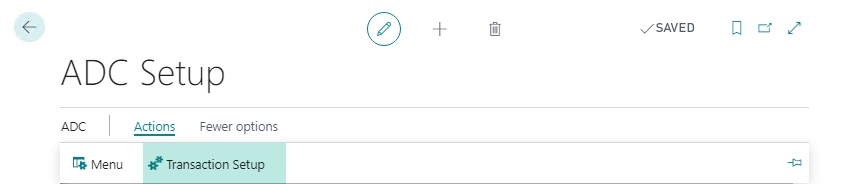
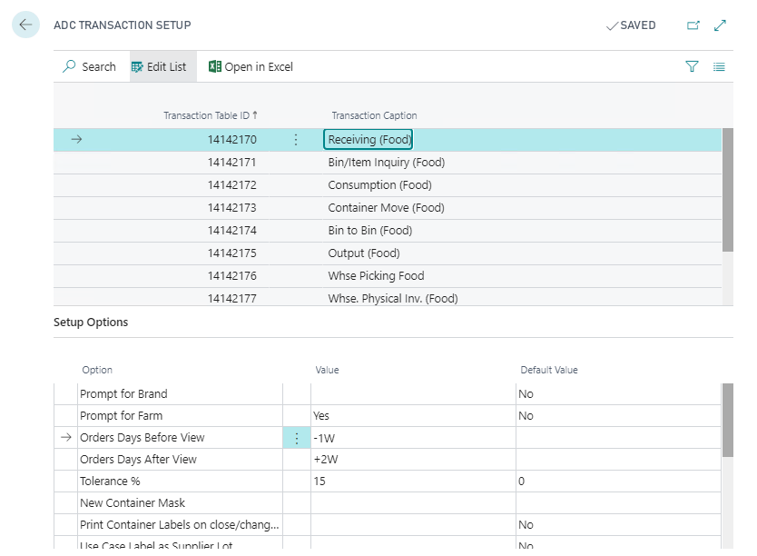

Home
/
Learn
/
ADC Framework
ADC Transaction Setup
4 minutes - Unit 4 of 4
Once you have setup an ADC Menu you can further configure those particular menu items (transactions) as to customize their functionality and adjust the flow of the conversations
Open ADC Setup and click on the
Transaction Setup
action

Select the ADC Transaction to be configured in the upper section of the screen and then adjust the configuration of within the lower section

Note
- if you change and ADC Transactions setup, you must close the Business Central setup page, and within the ADC Modern Client navigate back to the Main Menu in order to pickup those new configuration changes
Module Completed
< Back
Modules >
×